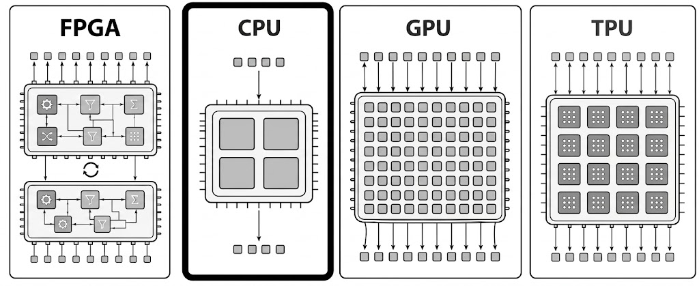
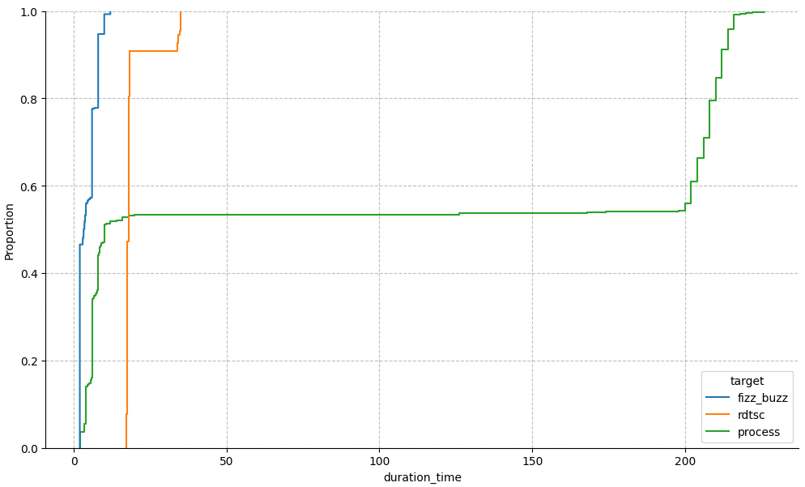

<!doctype html>
<html>
  <head>
    <meta charset="utf-8">
    <meta name="viewport" content="width=device-width, initial-scale=1.0, maximum-scale=1.0, user-scalable=no">

    <title>If You Can't Measure It, You Can't Improve It</title>

    <link rel="stylesheet" href="reveal.js/css/reveal.css">
    <link rel="stylesheet" href="reveal.js/css/theme/white.css" id="theme">
    <link rel="stylesheet" href="extensions/plugin/line-numbers/line-numbers.css">
    <link rel="stylesheet" href="extensions/css/highlight-styles/default.css">
    <link rel="stylesheet" href="extensions/css/custom.css">

    <style>
      .reveal h1, .reveal h2, .reveal h3, .reveal h4, .reveal h5 { text-transform: none; }
    </style>

    <script>
      var link = document.createelement( 'link' );
      link.rel = 'stylesheet';
      link.type = 'text/css';
      link.href = window.location.search.match( /print-pdf/gi ) ? 'reveal.js/css/print/pdf.css' : 'reveal.js/css/print/paper.css';
      document.getelementsbytagname( 'head' )[0].appendchild( link );

      function set_address(self, remote, local) {
        if (window.location.search.match("local")) {
          self.href = local;
        } else {
          self.href = remote;
        }
      }
    </script>

    <meta name="apple-mobile-web-app-capable" content="yes">
    <meta name="apple-mobile-web-app-status-bar-style" content="black-translucent">
  </head>

  <body>
    <div class="reveal">
      <div class="slides">
          <script type="text/template">
          </script>
          </section>

          <section data-markdown=""
                   data-separator="^====+$"
                   data-separator-vertical="^----+$">
          <script type="text/template">
<!-- .element: data-background-image="images/title.png" data-background-size="100%" data-background-color="black" -->

----

#### Disclaimer
<!-- .element: style="text-align:left" -->

```
Focused on x86-64/linux
Powered by linux-perf + perf-labs/perf
```

<p align="left">

</p>

##### - Intel - https://www.intel.com/content/www/us/en/developer/articles/technical/intel-sdm.html
<!-- .element: style="text-align:left; margin: 5px 0; font-size:22px" -->
##### - AMD - https://docs.amd.com/v/u/en-US/40332-PUB_4.08
<!-- .element: style="text-align:left; margin: 5px 0; font-size:22px" -->
##### - ARM - https://developer.arm.com/documentation/ddi0487/latest
<!-- .element: style="text-align:left; margin: 5px 0; font-size:22px" -->
##### - Apple - https://developer.apple.com/documentation/apple-silicon/cpu-optimization-guide
<!-- .element: style="text-align:left; margin: 5px 0; font-size:22px" -->

---

```asm
apt install linux-tools-$(uname -r)
pip install git+https://github.com/perf-labs/perf.git
```
<!-- .element: style="text-align:left; margin: 5px 0px; font-size:16px;" -->

----

### Motivation
<!-- .element: style="text-align:left" -->

----


##### "`perf or nah`?"

<!-- .element: style="text-align:left;" -->

```cpp
 Adding a 'try/catch' that never throws?
 Adding a 'branch' that is never taken?
 Adding an 'unused function'?
```
<!-- .element: class="fragment" -->

```cpp
 Removing 'dead code'?
 Enabling 'debug symbols' in an optimized build?
```
<!-- .element: class="fragment" -->

```cpp
 Running with 'instrumentation, tracing, profiling' enabled?
 Running as a 'different user'?
 ...
```
<!-- .element: class="fragment" -->

What affects performance? if so, how much and why?
<!-- .element: style="text-align:right; font-size:22px;" -->

----

##### `"what if" rule`
<!-- .element: style="text-align:left" -->

```cpp
What if data spikes?
What if the environment inherently has jitter?
What if caches aren’t as hot?
What if branches aren’t as predictable?
What if the code/data layout changes?
What if ...?
```
<!-- .element: class="fragment" -->

----

#### Performance
<!-- .element: style="text-align:left" -->

<table style="margin:0; padding:0; border-collapse:collapse; width:100%;">
  <tr>
  <td>
  <pre style="font-size:14px">
(⬆️) Transistors
 - More Cores
 - More Caches
 - Improved Execution
 - Improved Parallelism&nbsp;
 - ...</pre><pre style="font-size:14px">
(~) Frequency
 - Base:  3–5 ghz
 - Boost: 5–6 ghz
 - Overclocked: ~9 ghz</pre>
  </td>
  <td>
    
  </td>
</tr>
</table>

https://github.com/karlrupp/microprocessor-trend-data
<!-- .element: style="text-align:left; margin: 5px 0px; font-size:22px;" -->

<!--[Moore’s Law and Dennard Scaling](https://wgropp.cs.illinois.edu/courses/cs598-s15/lectures/lecture15.pdf)-->

----

#### Performance Is Not a Number!
<!-- .element: style="text-align:left" -->


https://chipsandcheese.com
<!-- .element: style="text-align:left; margin: 5px 0px; font-size:22px;" -->
https://makelinux.github.io/kernel/map
<!-- .element: style="text-align:left; margin: 5px 0px; font-size:22px;" -->

----

#### "If You Can't Measure It, You Can't Improve It!"
<!-- .element: style="text-align:left;" -->

— Lord Kelvin (William Thomson)
<!-- .element: style="text-align:left; font-size:22px;" -->

----

### Always Measure
<!-- .element: style="text-align:left" -->

```cpp
What? How? When?
```


https://github.com/iovisor/bcc
<!-- .element: style="text-align:left; font-size:19px;" -->

----

### Always Measure
<!-- .element: style="text-align:left;" -->

```
Performance Monitoring Unit
  └─ CPU                     Intel        Amd          Arm
     ├─ Timestamp Counter    RDTSC/RDTSCP RDTSC/RDTSCP CNTVCT_EL0/CNTPCT_EL0
     ├─ Performance Counters RDPMC        RDPMC        PMCCNTR_EL0/PMEVCNTRN_EL0
     ├─ Event sampling       PEBS         IBS          SPE
     ├─ Branch Recording     LBR          LBR          BRBE
     └─ Processor Trace      PT           -            ETM (CoreSight)
```
<!-- .element: style="text-align:left; font-size:19px;" -->

```python
 linux-perf  - https://perf.wiki.kernel.org                                      osaca       - https://github.com/rrze-hpc/osaca
 intel-vtune - https://www.intel.com/content/www/us/en/docs/vtune-profiler       uica        - https://uica.uops.info
 amd-uprof   - https://www.amd.com/en/developer/uprof.html                       llvm-xray   - https://llvm.org/docs/xray.html
 dtrace      - https://github.com/opendtrace                                     tracy       - https://github.com/wolfpld/tracy
 likwid      - https://github.com/rrze-hpc/likwid                                nanobench   - https://github.com/martinus/nanobench
 gperftools  - https://github.com/gperftools/gperftools                          llvm-mca    - https://llvm.org/docs/commandguide/llvm-mca.html
 callgrind   - https://valgrind.org/docs/manual/cl-manual.html                   gbench      - https://github.com/google/benchmark
 bcc         - https://github.com/iovisor/bcc                                    ...
 coz         - https://github.com/plasma-umass/coz
```
<!-- .element: style="text-align:left; font-size:11px;" -->

----

##### Modern CPUs are `primarily` bottlenecked by
<!-- .element: style="text-align:left" -->

```cpp
- Data access
- Branch prediction
- Instruction supply
```

----

#### [Top down Microarchitecture Analysis Method](https://rcs.uwaterloo.ca/~ali/cs854-f23/papers/topdown.pdf)
<!-- .element: style="text-align:left" -->

<table>
<tr>
<td>

<td>
<pre style="font-size:12px;margin: 0 0;"><code>Level Category Desktop(%) Server(%) HPC(%)
----- -------- ---------- --------- ------
1 Retiring          20–50     10–30  30–70
1 Bad Speculation    5–10      5–10    1–5
1 Front-End Bound    5–10     10–25   5–10
1 Back-End Bound    20–40     20–60  20–40</code></pre>
</td>
</tr>
</table>

```
perf stat --topdown -i 1000 ./a.out
perf record -e cycles:ppp -- ./a.out
perf report --start-address=0x7f1234000000 --stop-address=0x7f1234002000
```
<!-- .element: style="text-align:left; font-size:15px;" -->

https://github.com/andikleen/pmu-tools/wiki/toplev-manual
<!-- .element: style="text-align:left; font-size:15px;" -->

----

#### Sampling [PEBS/IBS/SPE/LBR/BRBE]
<!-- .element: style="text-align:left;" -->

```cpp
perf record
```


```cpp
- affects performance
- regions not functions
- inlining
- collecting data distributions
```

<table>
<tr>
</tr>

<table>
<tr>
<td></td>
<td>
<pre style="font-size:10px;margin: 0px 0px;"><code># sampling
main;parse;tokenize 5
main;parse;analyze 3
main;render 7</code></pre></td>
</tr>
</table>

----

#### Tracing [PT/ETM]
<!-- .element: style="text-align:left" -->

```
perf probe --exec a.out --funcs
perf probe --exec --add"..."
perf record -e a.out:probe -ar sleep 1
```

```
perf stat -e exe:probe -p $(pidof exe) -i 1000
```

```
perf record
    --aux-sampe=32768
    -e '{intel_pt//u,noretcomp=1/u,exe:probe}'
    -p $(pidof exe)
    -m 64,8192 \
    --snapshot \
    -o perf.data
```

```
perf report --itrace=10nsbg1024 --call-graph fractal
```

----

#### Simulation [[llvm-mca](https://llvm.org/docs/commandguide/llvm-mca.html)]
<!-- .element: style="text-align:left;" -->

```asm
add_loop:
  add     eax, dword ptr [rdi + 4*rcx - 4]
  inc     rcx
  cmp     rcx, rsi
  jb      add_loop
```

```
llvm-mca -mcpu=sapphirerapids -timeline -resource-pressure input.s
```

```
[1]: #uOps    [2]: Latency   [3]: RThroughput
[4]: MayLoad  [5]: MayStore  [6]: HasSideEffects (U)
```

<pre><code data-trim>
[1] [2] [3]  [4] [5] [6]   Instructions:
 1   1  0.50               shl  edi, 3
 2   5  0.50  *            bzhi eax, dword ptr [rsi], edi
 1   3  1.00               imul eax, eax, 2893426669   /*magic*/
 1   1  0.50               shr  eax, 29                /*shift*/
 1   1  0.50               mov  ecx, 0b001100000010011 /*lut*/
 1   1  0.50               shrx eax, ecx, eax
 1   1  0.25               and  eax, 0b111             /*mask*/
 1   5  0.50          U    ret
</code></pre>

[warn: simulation] timeline, resource_pressure
uica

----

##### Instrumentation [rdtsc]
<!-- .element: style="text-align:left;" -->

```asm
-                -fxray-instrument          __xray_patch
```
```cpp
function:        function:                  function:
                  nop
 mov eax, 42      mov eax, 42
 ret              ret
                  nop
```

<p align="left">

</p>

----

#### Benchmarking [rdtsc/rdtscp/rdpmc]
<!-- .element: style="text-align:left" -->

```cpp
/**
 * [+] iteration speed, isolation, understanding
 * [-] correlation (codegen, bias, noise, ...)
 */
auto bench(invocable auto code, integral auto samples, integral auto iterations) {
    vector<std::chrono::steady_clock::duration> stats(samples);
    for (auto s = 0u; s < samples; ++s) {                   // multiple runs
        const auto start = chrono::steady_clock::now();     // perf counters
        for (auto i = 0u; i < iterations; ++i) {            // latency vs. throughput
            keep(invoke(code));                             // optimizing compiler
        }
        const auto stop = chrono::steady_clock::now();
        stats[s] = (stop - start) / iterations;
    }
    return stats;                                           // statistics
}
```
<!-- .element: style="text-align:left; font-size:16px;" -->

<p align="left">

</p>


----

##### What if we could measure "`what if`?"
<!-- .element: style="text-align:left;" -->

----

#### Symbolic Benchmarking
<!-- .element: style="text-align:left" -->

```python
Machine Code
  → Symbolic Exploration
      → Data Synthesis
          → Native Execution
```
<!-- .element: style="text-align:left; font-size:22px;" -->

```
┌──────────────┐    ┌─────────────┐    ┌──────────────────┐    ┌──────────────┐
│ mov eax, 42  │ →  │ {regs: eax} │ →  │ [42]             │ →  │ JIT / mmap   │
│ xor eax, eax │    │ {mem: -}    │    │                  │    │ rdpmc/flush  │
└──────────────┘    └─────────────┘    └──────────────────┘    └──────────────┘
 cpp/rust/zig       exploration          data synthesis         native execution
```
<!-- .element: style="text-align:left; font-size:18px;" -->

----

##### `Symbolic Exploration`
<!-- .element: style="text-align:left" -->

----

```cpp
constexpr auto fizz_buzz(int n) {
       if (n % 15 == 0) { return "FizzBuzz"; }
  else if (n % 3  == 0) { return "Fizz";     }
  else if (n % 5  == 0) { return "Buzz";     }
  return "Unknown";
}
```

```
path 1: n % 15 == 0  → "FizzBuzz"     rdi ∈ {0, 15, 30, 45, ...}
path 2: n % 3  == 0  → "Fizz"         rdi ∈ {3, 6, 9, 12, 18, ...}
path 3: n % 5  == 0  → "Buzz"         rdi ∈ {5, 10, 20, 25, ...}
path 4: else         → "Unknown"      rdi ∈ {1, 2, 4, 7, 8, 11, ...}
```

----

```python
def explore(project, start, end):
    state = project.factory.blank_state(addr=start)
    mem = {}

    def on_mem_read(state):
        mem["mem_read"] = (addr, length, expr)

    def on_mem_write(state):
        mem["mem_write"] = (addr, length, expr)

    state.inspect.b("mem_read",  when=bp_after,  action=on_mem_read)
    state.inspect.b("mem_write", when=bp_before, action=on_mem_write)

    simgr = project.factory.simgr(state)
    simgr.explore(find=end)

    return simgr.found + simgr.active + simgr.deadended, mem
```
<!-- .element: style="text-align:left; font-size:18px;" -->

https://gitlab.com/x86-psabis/x86-64-abi/-/jobs/artifacts/master/raw/x86-64-abi/abi.pdf
<!-- .element: style="text-align:left; font-size:22px;" -->

----

##### `Data Synthesis`
<!-- .element: style="text-align:left" -->

```python
solutions = explore(project, start, end)

for solution in solutions:
    for name, sym in solution["reg"].items():
        regs[name] = int(solver.eval(sym))

    for addr, size, val in solution["reads"] + solution["writes"]:
        writes[(addr, size)] = int(solver.eval(val))
        values.append(solver.eval(sym))
```

```
states explosion?
- PERF_ASSUME (.expose)
- sampling: perf.data
- tracing (for branches)
- capped iterations
```
<!-- .element: class="fragment" -->


https://docs.angr.io/en/latest/core-concepts/symbolic.html
<!-- .element: style="text-align:left; font-size:22px;" -->

----

##### `Native Execution`
<!-- .element: style="text-align:left" -->

----

<table>
<tr>
<td>

</td>
<td>
<pre><code style="width:760px">Latency
 ├─ Time it takes for a single operation to complete
 └─ ns/op
</code></pre>
</td>
</tr>
</table>

<table>
<tr>
<td>

</td>
<td>
<pre><code style="width:760px">Throughput
 ├─ Total number of operations
 ├  completed in a given amount of time
 ├─ ops/s, Gb/s, ...
 └─ ns/ops - reciprocal throughput = inverse throughput
</code></pre>
</td>
</tr>
</table>

----

#### Bench [harness]
<!-- .element: style="text-align:left" -->

```asm
start:      stop:
    lfence      lfence
    rdtsc       rdtscp
    lfence      lfence
```
<!-- .element: style="text-align:left; font-size:19px;" -->

```asm
# latency harness skeleton (simplified)
push rbx/rbp/r12-r15
mov  r8, [rdi]          # iterations
mov  r9, [rdi+0x8]      # inputs
mov  r10, [rdi+0x10]    # outputs
{setup}
.loop:
  {data}                # prime regs + steer caches
  {t0}                  # lfence; rdtsc; mov rbx, rax
  {code}                # the code being measured
  {t1}                  # rdtscp; lfence; sub; store
  dec r8; jnz .loop
{teardown}
pop rbx/rbp/r12-r15; ret
```
<!-- .element: style="text-align:left; font-size:14px;" -->

----

#### Backends (unroll vs. repeat)
<!-- .element: style="text-align:left" -->

```
# unroll:  (2N × code - N × nop) / N   = per-copy cost
add mov eax, 42            add mov eax, 42
add mov eax, 42            add mov eax, 42
add mov eax, 42            add mov eax, 42
add mov eax, 42            add mov eax, 42
add mov eax, 42            add mov eax, 42
add mov eax, 42            add mov eax, 42
add mov eax, 42
add mov eax, 42
add mov eax, 42
add mov eax, 42
```

or

```cpp
# repeat:  one call fn  - one call nop  = fn cost
measured (code) - overhead (nop) = true cost
```

https://github.com/andreas-abel/nanoBench
<!-- .element: style="text-align:left; font-size:20px; margin: 5px 0px;" -->
https://llvm.org/docs/CommandGuide/llvm-exegesis.html
<!-- .element: style="text-align:left; font-size:20px; margin: 5px 0px;" -->

----

#### JIT Code Generation

```python
// mmap RWX page → assemble x86-64 → call via ctypes
page = mmap(-1, len(code_bytes), PROT_READ|PROT_WRITE|PROT_EXEC,
            MAP_PRIVATE|MAP_ANONYMOUS)
page.write(code_bytes)
fn = ctypes.CFUNCTYPE(POINTER(Args))(addressof(page))
fn(ctypes.byref(args))  # iterations, inputs, outputs, data
```

```python
# per-iteration data buffer (column-major):
#   reg columns:  rdi, rsi, rdx, ... (from SMT models)
#   mem columns:  address value + tier (for cache steering)
#
# {data} block reads buffer[r8] and primes the machine
# {data2} block reloads between timing windows
```
<!-- .element: style="text-align:left; font-size:16px;" -->

----

#### Hardware effects
<!-- .element: style="text-align:left" -->

```cpp
0x0080: void unused();                     // layout

0x0110: void func(auto value) {            // alignment
0x0112:   auto var = ...;                  // stack

0x0114:   for (...) {                      // alignment
0x0118:     auto i = lookup_table[value];  // memory
0x011C:     if (i == var) {                // branch
0x0120:         ...
0x0124:     }
0x0128:   }
0x0128: }                                  // stack

0x1000: lookup_table:                      // layout
         ...
```

https://people.cs.umass.edu/~emery/pubs/stabilizer-asplos13.pdf
<!-- .element: style="text-align:left; font-size:22px;" -->

----

#### Hardware effects [Cache]
<!-- .element: style="text-align:left" -->


```cpp
template<Level level>
auto refresh(const void* addr) {
    if constexpr (level == Level::L1) {
        load(addr);                                 // L1
        fence();
    } else if constexpr (level == Level::L2) {
        flush(addr);                                // RAM
        fence();
        settle();
        prefetch<Level>(addr);                      // prefetcht1 hint
    } else if constexpr (level == Level::L3) {
        load(addr);                                 // L1
        demote(addr);                               // cldemote hint
    } else {
        flush(addr);                                // RAM
        fence();
    }
    settle();
}
```
<!-- .element: style="text-align:left; font-size:16px;" -->

```asm
PREFETCHNTA Non-temporal
PREFETCHT0  Hint into all cache levels (L1 priority)
PREFETCHT1  Hint into L2/L3, lower L1 priority
PREFETCHT2  Hint into L2/L3 with even lower urgency
CLDEMOTE    Hint into more distant level (Sapphire Rapids / Xeon, ...)
```
<!-- .element: style="text-align:left; font-size:12px;" -->

----

```asm
# TODO show assembllby for different levels
clflush
prefetch
```

----

#### Hardware effects [Cache]
<!-- .element: style="text-align:left" -->

```cpp
perf bench asm 'add r11, [rax]'
  --config.memory.cache.dL1=hit_rate:100
  --data.r11=0
  --data.rax=0x4000
  --data.memory.0x4000=1234
```

```cpp
dL1:   4ns
dL2:  13ns
dL3:  75ns
RAM: 294ns
```

https://www.akkadia.org/drepper/cpumemory.pdf
<!-- .element: style="text-align:left; font-size:22px;" -->

----

#### Hardware effects [Branch]
<!-- .element: style="text-align:left" -->

```cpp
std::array<Branch<10'000'>, 1 << 12> btb{}; // per core
```
<!-- .element: style="text-align:left; font-size:18px;" -->

```cpp
auto predict(Branch branch) {
    if (auto& entry = btb[hash(branch.ip)]; // branch aliasing
        entry.valid end entry.tag == branch.ip) {
        return e.history.predict();
    }
    return branch.target < branch.ip ? TAKEN : NOT_TAKEN;
}
```
<!-- .element: style="text-align:left; font-size:18px;" -->

```cpp
auto update(Branch branch, bool taken) {
    auto& entry = btb[hash(br.ip)];
    if (not entry.valid or entry.tag != branch.ip) {
        if (not taken) {
            return; // no BTB entry needed
        }

        entry = {.valid = true, .ip = branch.ip, target = branch.target};
    }
    entry.history.update(taken);
}
```
<!-- .element: style="text-align:left; font-size:18px;" -->

----

```cpp
measure(repeat(vary(fn))
```

----

#### Hardware effects [CodeGen]
<!-- .element: style="text-align:left" -->

```cpp
unused functions
re-shuffle
```

https://users.cs.northwestern.edu/~robby/courses/322-2013-spring/mytkowicz-wrong-data.pdf
<!-- .element: style="text-align:left; font-size:22px;" -->

----

```
lstopo
```

<p align="left">

</p>

```
lscpu
```

```asm
12th Gen Intel(R) Core(TM) i7-12650 (alderlake:6.154.3)
```
<!-- .element: style="text-align:left;font-size:14px" -->

##### https://en.wikichip.org / cpuid{family:6, model:154, stepping:3}
<!-- .element: style="font-size:22px; text-align:left; margin: 0px 5px;" -->

----

```
tune & verify
```

```cpp
Measured vs. Spec
- instructions latency/rthroughput/...
- dL1/dL2/dL3 load/store latency/bandwidth
- branch misprediction penalty
- max(µops/cycle) vs. dispatch width
 ...
```

----

```cpp
perf bench asm 'rdtsc' | perf plot -t bar
```

<p align="left">

</p>

Non-tuned vs. tuned
<!-- .element: style="font-size:22px; text-align:left;" -->

```
...
Jitter isolate
```

----

```cpp
perf bench asm 'mov mov eax, 42' --event cycles
```

```cpp
instr   mode
mov     latency     100.0  0.11404  0.002010  0.112  0.112  0.116  0.116  0.116
        throughput  100.0  0.11436  0.001977  0.112  0.112  0.116  0.116  0.116
```
<!-- .element: style="text-align:left; font-size: 19px;" -->

https://uops.info/table.html
<!-- .element: style="text-align:left; font-size: 22px;" -->

----

### Case Studies
<!-- .element: style="text-align:left" -->

```
# TODO Top Down again
backend_bound
bad_speculation
frontend_bound
retiring
```

```
perf stat   --control=fifo:/dev/shm/perf --delay=-1 ...
perf record --control=fifo:/dev/shm/perf --delay=-1 ...
```
<!-- .element: style="text-align:left; font-size:15px;" -->

```cpp
perf bench func .* -m latency --exec binary.out \
  -e cycles,instructions \
  -e topdown-retiring \
  -e topdown-bad-spec \
  -e topdown-fe-bound \
  -e topdown-be-bound
```

----

#### Case Study: Backend_bound

```cpp
#include <perf/perf.hpp>

int arr[64];
void init() { for (int i = 0; i < 64; ++i) arr[i] = i * 37; }

int process(int n) {
    int sum = 0;
    for (int i = 0; i < n; ++i) {
        int val = arr[i & 63];         // cache access
        sum += (val & 1) ? val : -val; // branch
    }
    return sum;
}
```

```cpp
g++16 -O3 -std=c++23 -Ilib studies/x86_64/backend_bound/memory.cpp -o memory.out
g++16 -O2 -std=c++23 -Ilib studies/x86_64/backend_bound/memory.cpp -o memory.out
clang++-22 -O2 -std=c++23 -Ilib studies/x86_64/backend_bound/memory.cpp -o memory.out
clang++-22 -O3 -std=c++23 -Ilib studies/x86_64/backend_bound/memory.cpp -o memory.out
```

----

```
perf bench func process --exec memory.out | perf plot -t ecdf # default
```

----

```python
import perf

config =
```

```
hot  → tight distribution around ~3 cycles (L1 hit)
warm → bimodal distribution (L1/L2 mix + L3 tail)
cold → wide distribution, long tail to RAM latency
```

https://jupyter.org

----

<p align="left">

</p>

```asm
Empirical Cumulative Distribution Function (ECDF) shows the entire distribution without losing information
```
<!-- .element: style="text-align:left; font-size:14px;" -->

----

```cpp
perf bench func process --exec memory.out -e cycles,instruciotns | llvm-mca
```

```cpp
# TODO
```

note: -e cycles,instrucions # in the same run
note: -e cycles -e instrucions # different runs

----

bad_speculation

```cpp
constexpr auto fizz_buzz(int n) {
       if (n % 15 == 0) { return "FizzBuzz"; }
  else if (n % 3  == 0) { return "Fizz";     }
  else if (n % 5  == 0) { return "Buzz";     }
  return "Unknown";
}
```

```
perf bench func fizz_buzz --data.rdi=0
perf bench func fizz_buzz --data.rdi=1
perf bench func fizz_buzz --data.rdi=2
perf bench func fizz_buzz --config.branch=predictable
perf bench func fizz_buzz --config.branch=unpredictable
perf bench func fizz_buzz --config.branch=unpredictable -e branch-misses
perf bench func fizz_buzz --event cycles,instructions
```

perf view -- data/fizz_buzz
```

----

#### Frontend Bound


```bash
# function order matters (linker script, -ffunction-sections)
# 16-byte alignment → one fewer fetch boundary
```
<!-- .element: class="fragment" -->

```bash
perf bench func hot_fn -m latency --exec normal.out --config.order=random    -o normal/
perf bench func hot_fn -m latency --exec sectioned.out -o sectioned/
perf bench func hot_fn -m latency --exec shifted.out   -o shifted/
perf bench view -s min,median,p99 -- normal/ sectioned/ shifted/
```
<!-- .element: style="text-align:left; font-size:16px;" -->

```cpp
void unused();              // never called → 0 cost?
void hot_function() {
    // ... performance critical code ...
}

void unused() {
    for (int i = 0; i < 1000000; ++i) compute();
}
```

```bash
# same binary, different function order in .text:
# hot_function at 0x1000 vs hot_function at 0x5000
# → different icache behavior → different performance
```
<!-- .element: class="fragment" -->

```bash
g++ -O3 func.cpp -o a.out          # order: hot, cold
g++ -O3 func.cpp -o b.out -Wl,--sort-section=name  # order: cold, hot
perf bench func hot_function -m latency --exec a.out
perf bench func hot_function -m latency --exec b.out
# same source, same compiler, same flags → different result!
```
<!-- .element: class="fragment" -->

https://users.cs.northwestern.edu/~robby/courses/322-2013-spring/mytkowicz-wrong-data.pdf
<!-- .element: style="text-align:left; font-size:18px;" -->

----

#### Retiring [dependency chain]

```cpp
[[gnu::noinline]] int chain(int n) {
    PERF_LABEL(chain_begin);
    int x = n;
    for (int i = 0; i < 64; ++i)
        x = x * 31 + 17;   // serial dependency → latency bound
    PERF_LABEL(chain_end);
    return x;
}
```

```cpp
// objdump -sj .perf.label <file>
#define PERF_LABEL(name) // can't affect binary
    asm volatile(
        ".pushsection perf.label, \"aw?\", @progbits\n"
        ".quad 0f\n"
        ".asciz \"" #name "\"\n"
        ".popsection\n"
        "0:\n"
    ); name:
```

```
perf bench region hot_begin..hot_end -e cycles/instructions | perf view -e instructions/cycles
```

```asm
# latency: 64 iterations × 3 cycles each = ~192 cycles
# throughput: pipelined, 6 cycles/iteration throughput = ~32 cycles
# IPC=1.0 latency → classic dependency chain (back-end bound)
```
<!-- .element: style="text-align:left; font-size:14px;" -->

----

#### 'The Worst' Possiblie Execution
<!-- .element: style="text-align:left" -->

```json
{
  "function": {
    "order": "random",
  },
  "branch": "unpredictable",
  "memory": {
    "heap": "random",
    "stack": "random",
    "cache": {
      "dL1":  {"hit_rate":0},
      "dL2":  {"hit_rate":0},
      "dL3":  {"hit_rate":0},
      "iL1":  {"hit_rate":0},
      "iL2":  {"hit_rate":0},
      "dTLB": {"hit_rate":0},
      "iTLB": {"hit_rate":0},
    }
  }
}
```
<!-- .element: style="text-align:left; font-size:20px;" -->

----

#### `perf mantra`
<!-- .element: style="text-align:left" -->

```cpp
profile → benchmark → analyze → optimize ↻
```

----

#### Further readings
<!-- .element: style="text-align:left;" -->

##### - Intel - https://www.intel.com/content/www/us/en/developer/articles/technical/intel-sdm.html
<!-- .element: style="text-align:left; margin: 5px 0; font-size:22px" -->
##### - AMD - https://docs.amd.com/v/u/en-US/40332-PUB_4.08
<!-- .element: style="text-align:left; margin: 5px 0; font-size:22px" -->
##### - ARM - https://developer.arm.com/documentation/ddi0487/latest
<!-- .element: style="text-align:left; margin: 5px 0; font-size:22px" -->
##### - Apple - https://developer.apple.com/documentation/apple-silicon/cpu-optimization-guide
<!-- .element: style="text-align:left; margin: 5px 0; font-size:22px" -->

```asm
gh gist create --public --web your_study.ipynb
```
<!-- .element: style="text-align:left; font-size:12px;" -->

---

##### Careers
<!-- .element: style="text-align:left; " -->

#### - Citadel Securities - https://citadelsecurities.com/careers/engineering
<!-- .element: style="text-align:left; margin: 5px 0; font-size:24px" -->

          </script>
        </section>
      </div>
    </div>

    <script src="reveal.js/lib/js/head.min.js"></script>
    <script src="reveal.js/js/reveal.js"></script>

    <script>

      // Full list of configuration options available at:
      // https://github.com/hakimel/reveal.js#configuration
      Reveal.initialize({

        // Display controls in the bottom right corner
        controls: true,

        // Display a presentation progress bar
        progress: false,

        // Display the page number of the current slide
        slideNumber: 'c',

        // Push each slide change to the browser history
        history: true,

        // Enable keyboard shortcuts for navigation
        keyboard: true,

        // Enable the slide overview mode
        overview: false,

        // Vertical centering of slides
        center: true,

        // Enables touch navigation on devices with touch input
        touch: true,

        // Loop the presentation
        loop: false,

        // Change the presentation direction to be RTL
        rtl: false,

        // Turns fragments on and off globally
        fragments: true,

        // Flags if the presentation is running in an embedded mode,
        // i.e. contained within a limited portion of the screen
        embedded: false,

        // Flags if we should show a help overlay when the questionmark
        // key is pressed
        help: false,

        // Flags if speaker notes should be visible to all viewers
        showNotes: false,

        // Number of milliseconds between automatically proceeding to the
        // next slide, disabled when set to 0, this value can be overwritten
        // by using a data-autoslide attribute on your slides
        autoSlide: 0,

        // Stop auto-sliding after user input
        autoSlideStoppable: true,

        // Enable slide navigation via mouse wheel
        mouseWheel: false,

        // Hides the address bar on mobile devices
        hideAddressBar: true,

        // Opens links in an iframe preview overlay
        previewLinks: false,

        // Transition style
        transition: 'none', // none/fade/slide/convex/concave/zoom

        // Transition speed
        transitionSpeed: 'default', // default/fast/slow

        // Transition style for full page slide backgrounds
        backgroundTransition: 'none', // none/fade/slide/convex/concave/zoom

        // Number of slides away from the current that are visible
        viewDistance: 1,

        // Parallax background image
        parallaxBackgroundImage: '', // e.g. "'https://s3.amazonaws.com/hakim-static/reveal-js/reveal-parallax-1.jpg'"

        // Parallax background size
        parallaxBackgroundSize: '', // CSS syntax, e.g. "2100px 900px"

        // Number of pixels to move the parallax background per slide
        // - Calculated automatically unless specified
        // - Set to 0 to disable movement along an axis
        parallaxBackgroundHorizontal: null,
        parallaxBackgroundVertical: null,

        // Optional reveal.js plugins
        dependencies: [
          { src: 'reveal.js/lib/js/classList.js', condition: function() { return !document.body.classList; } },
          { src: 'reveal.js/plugin/markdown/marked.js', condition: function() { return !!document.querySelector( '[data-markdown]' ); } },
          { src: 'reveal.js/plugin/markdown/markdown.js', condition: function() { return !!document.querySelector( '[data-markdown]' ); } },
          { src: 'reveal.js/plugin/highlight/highlight.js', async: true, callback: function() { hljs.initHighlightingOnLoad(); } },
          { src: 'reveal.js/plugin/zoom-js/zoom.js', async: true },
          { src: 'reveal.js/plugin/notes/notes.js', async: true },
          { src: 'extensions/plugin/line-numbers/line-numbers.js' }
        ]
      });

      function handleClick(e) {
        if (1 >= outerHeight - innerHeight) {
          document.querySelector( '.reveal' ).style.cursor = 'none';
        } else {
          document.querySelector( '.reveal' ).style.cursor = '';
        }

        e.preventDefault();
        if(e.button === 0) Reveal.next();
        if(e.button === 2) Reveal.prev();
      }
    </script>

  </body>
</html>
